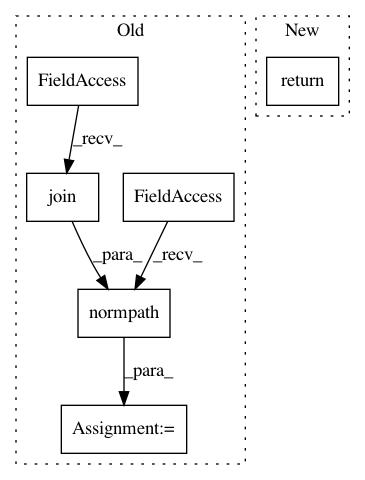

65d77bfdccc8b126f8e69d167df7d7713cf358fa,lib/matplotlib/backends/backend_wx.py,,_load_bitmap,#Any#,1223
Before Change
Returns a wx.Bitmap object
basedir = os.path.join(rcParams["datapath"], "images")
bmpFilename = os.path.normpath(os.path.join(basedir, filename))
if not os.path.exists(bmpFilename):
raise IOError("Could not find bitmap file "%s"; dying" % bmpFilename)
bmp = wx.Bitmap(bmpFilename)
After Change
path = cbook._get_data_path("images", filename)
if not path.exists():
raise IOError(f"Could not find bitmap file "{path}" dying")
return wx.Bitmap(str(path))
def _set_frame_icon(frame):
bundle = wx.IconBundle()
In pattern: SUPERPATTERN
Frequency: 3
Non-data size: 6
Instances
Project Name: matplotlib/matplotlib
Commit Name: 65d77bfdccc8b126f8e69d167df7d7713cf358fa
Time: 2019-05-22
Author: anntzer.lee@gmail.com
File Name: lib/matplotlib/backends/backend_wx.py
Class Name:
Method Name: _load_bitmap
Project Name: fxsjy/jieba
Commit Name: 4197dfb8fa62574a86ec09fa5ddc33fd117d6464
Time: 2015-02-09
Author: abcdoyle888@gmail.com
File Name: jieba/__init__.py
Class Name:
Method Name: get_abs_path_dict
Project Name: ilastik/ilastik
Commit Name: 219459f15476426276e24329cdb6f091b5f7cf41
Time: 2019-06-26
Author: tomaz.vieira@embl.de
File Name: ilastik/applets/dataSelection/dataSelectionSerializer.py
Class Name: DataSelectionSerializer
Method Name: importStackAsLocalDataset